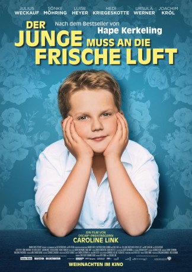

IMDB-Wertung: 7.8 / 10
IMDB-Wertung: 7.8 / 10  Metascore:
Metascore: 
Dramatised origin story of one of Germany's most beloved contemporary comedians.
Alternativ: Alle Farben des Lebens (Originaltitel)
 IMDB-Wertung: 7.8 / 10 Metascore:
Dramatised origin story of one of Germany's most beloved contemporary comedians.
Jahr: 2018
Dauer: 100 Minuten
FSK: 6
Land: Deutschland Studio: Warner Bros.Tonspuren: - , - ,
Untertitel:
Auflösung: 1080p (1920x800) Größe: 7270 MB
Genre: Drama, Komödie, Biographie
Regisseur: Caroline Link
Drehbuch: Ruth Toma, Hape Kerkeling
Soundtrack: Niki Reiser
Darsteller:
 Diana Amft als
Diana Amft als  Sönke Möhring als
Sönke Möhring als  Joachim Król als
Joachim Król als  Martina Eitner-Acheampong als
Martina Eitner-Acheampong als  Maren Kroymann als
Maren Kroymann als  Elena Uhlig als
Elena Uhlig als  Ursula Werner als
Ursula Werner als  Ilja Richter als
Ilja Richter als  Hedi Kriegeskotte als
Hedi Kriegeskotte als Datei: X:\2018(G-M)\Junge muss an die frische Luft, Der (2018, FSK6, 1920x800).mkv seit 29.06.2019
Festplatte: HD 2018(G-Z)-2019(A-Z)
 Es gibt insgesamt 138 Filme in der Gruppe '2018(G-M)'
Es gibt insgesamt 138 Filme in der Gruppe '2018(G-M)'